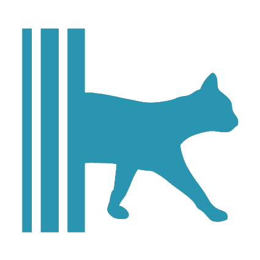
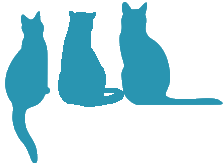

Zeynep Çetin
"Grow smart . Eat smart . Be smart"
Welkom op mijn persoonlijke pagina!
Hier kan u mij wat beter leren kennen zoals wat ik doe in mijn vrije tijd of wat ik vroeger voor deze Digitale Vormgeving gedaan heb en wat een grote deel is van mijn leven.
Via deze persoonlijke pagina heb ik mijn creativiteit losgelaten zodat ik deze kant van mezelf ook kan tonen aan jullie. Daarnaast wil ik jullie ook kennis laten maken met mijn nog niet vermelde carrière. Maar dit ga ik nog niet verklappen...
Dus als u wat meer over mij zou willen weten, hoeft u alleen maar naar beneden te scrollen!
Scroll naar beneden
Mijn familie
Familie is het meest waardevolste voor mij.
Ik ben zeer familie georiënteerd en zou niet weten wat ik zou doen als ik niet mijn geweldige nichtjes en neven rondom mij had.
Mijn familie is een beetje anders dan anderen aangezien wij een vrij grote stamboom hebben.
Mijn moeder haar kant woont grotendeels in België terwijl mijn vader zijn kant zich grotendeels in Turkije bevindt.
Wanneer wij op vakantie gaan naar Turkije zijn wij altijd omringt door familie en meestal ontmoet ik een nieuw familielid bij elk bezoek.
De beste ervaring van een grote familie als die van mij is dat je omringt bent door je geliefden.
Er is niks beters dan samenkomen en naar elkaars ervaringen en verhalen luisteren terwijl we genieten van het geweldige dorpsweer.
Mijn katten  
Ik ben de trotse tante van een kat genaamd Luci, kort voor lucifer.
We hebben Luci alleen gevonden in een steegje en na de eerste blik wisten we al dat zij bij onze familie thuis hoorde.
Ze is een zwart harige straatkat met een lichte temperament maar wanneer ze je eenmaal kent als de snack god wijkt ze niet meer van je zijden.
Naast mijn schattige viervoeter ben ik ook de trotse eigenaar van 5 katten in Minecraft.
Ik heb hun allemaal gevonden op verschillende avonturen met en soms zonder vrienden.
Zoals bij het ontvoeren van villagers en het vinden van een heksenhut !
School ervaringen
Voor mijn studies op de hogeschool van PXL heb ik mijn diploma via afstand onderwijs behaald samen met mijn Webmaster en Social media manager diploma.
Ik heb geleerd hoe ik gebruik kan maken van html en CSS samen met photoshop en andere dergelijke programma's.
Maar dit wist u allemaal al.
voor deze opleiding studeerde ik architecturale vormgeving op de Kunstschool in Genk.
Bij deze richting heb ik geleerd hoe ik plattegronden kan tekenen, designen en uitwerken aan de hand van maquettes.
Ik heb verschillende gebouwen en meubels ontworpen zoals een mini-doolhof container bed & breakfast, moderne huis en dergelijke andere projecten.
Naast maquettes en plattegronden maakte ik ook verschillende tekeningen.